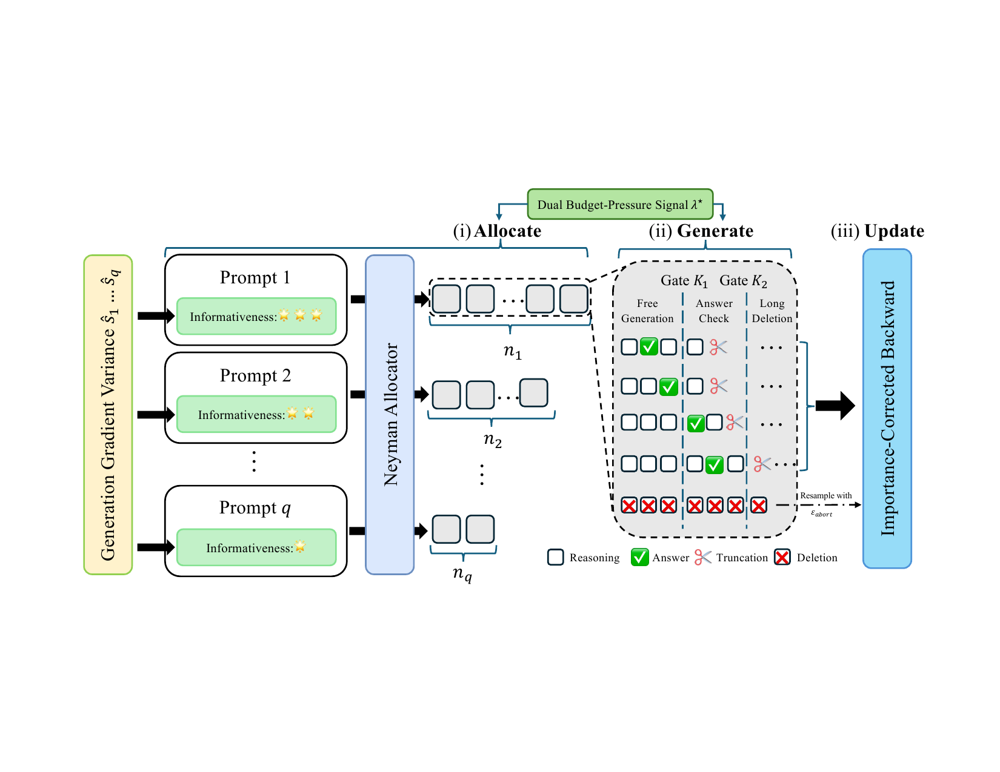
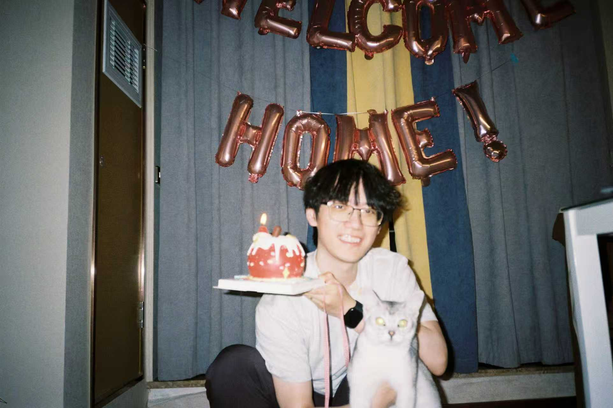
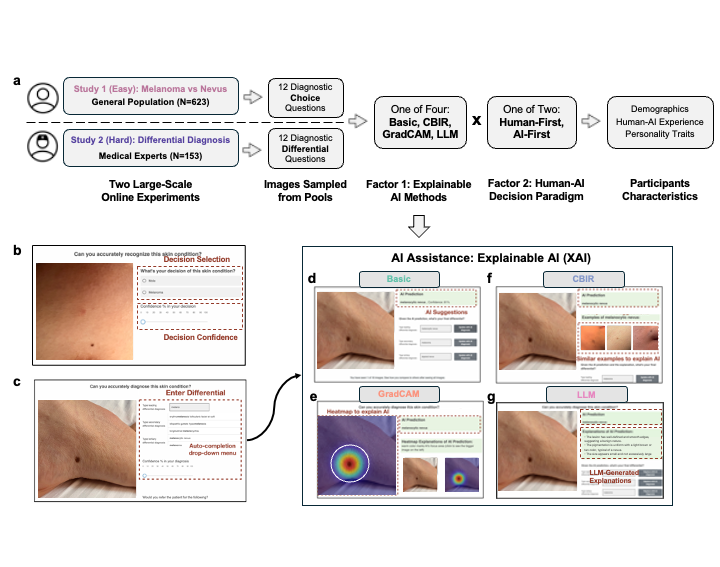
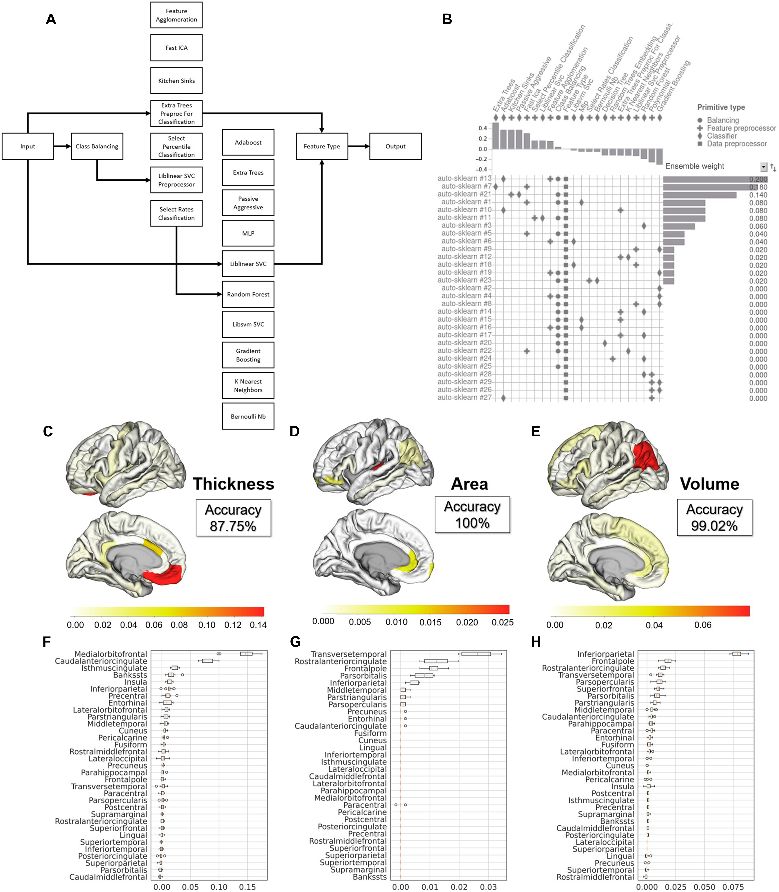
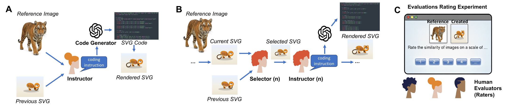
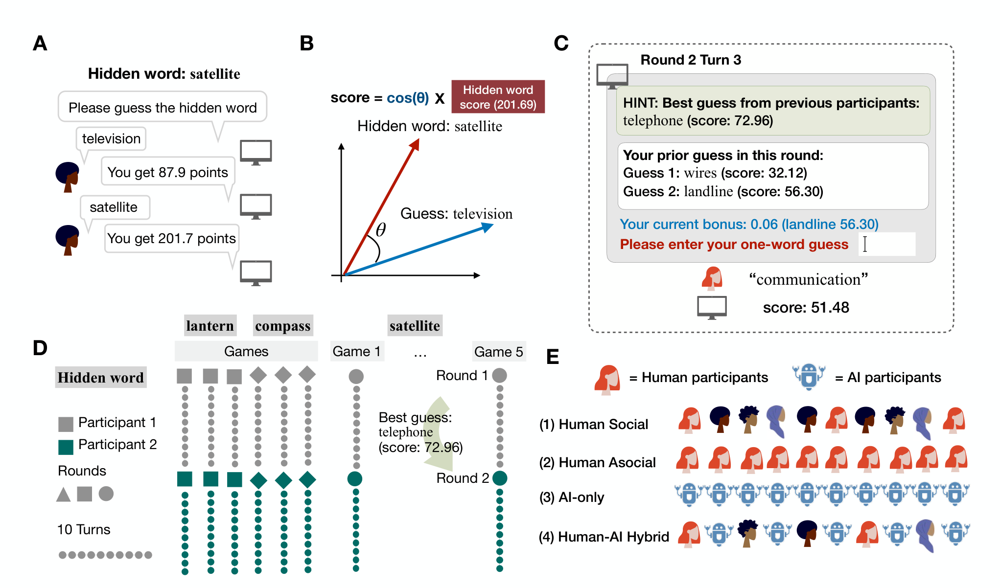
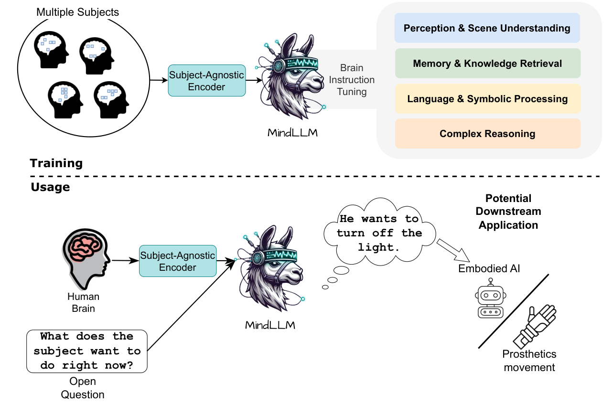
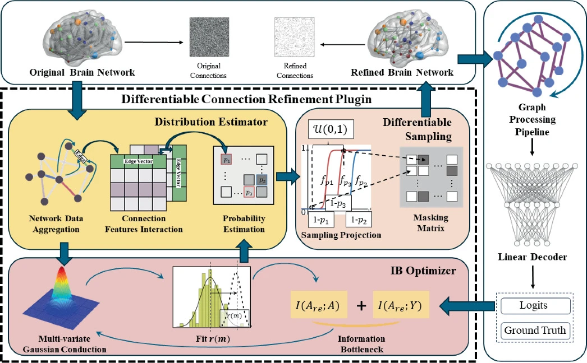
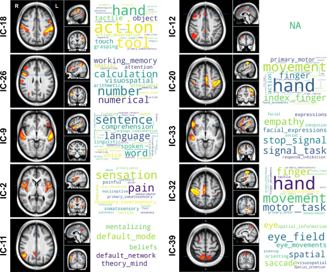
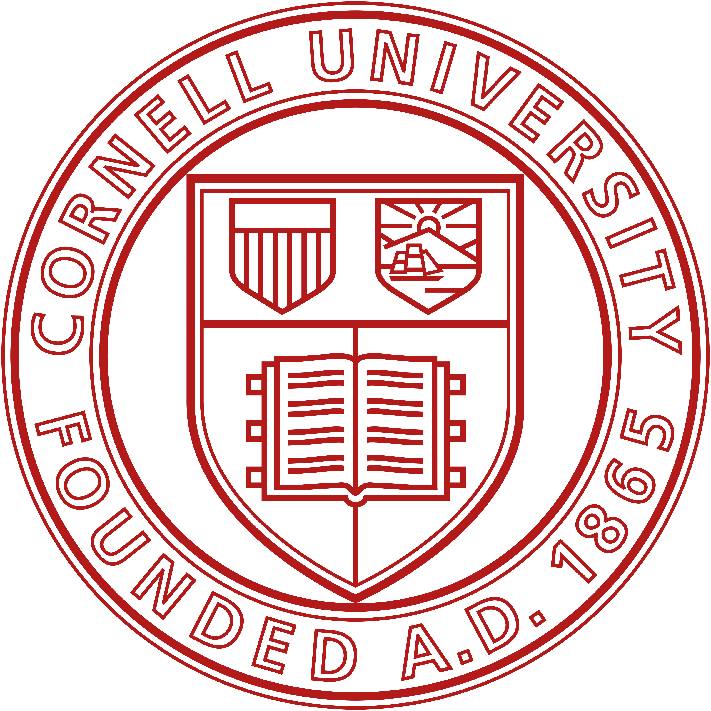

DUET: Optimize Token-Budget Allocation for Reinforcement Learning with Verifiable Rewards
H Hu, X Zhao, X Xu, N Jacoby
arXiv preprint (2026)
Haoyu Hu
Hi, I’m Haoyu Hu. I’m currently a PhD student working with Dr. Nori Jacoby at Cornell University on human-AI collaboration and reinforcement learning. I also work closely with Dr. Xuhai Orson Xu at Columbia University on AI application in the medical area. Previously I studied one year at the University of Cambridge in clinical neurosciences. I gained my bachelor’s in psychology at Zhejiang University.
I’m interested in finding the best role allocations for the human-machine hybrid society: How human and AI collaborate in a more efficient and effective way with safeguards, especially in data-sensitive areas like medicine? With lessons learned from the collaboration, I also train the model to serve and learn from human preferences and organizations.
I’m open to collaboration, feel free to shoot me an email if you share similar interests with me!

PhD Student
Cornell University
Aug. 2026 Our Nature Medicine paper is online available!
Jul. 2026 Our Science Advances paper is online available!
See my Google Scholar profile for the complete list.

H Hu, X Zhao, X Xu, N Jacoby
arXiv preprint (2026)

XO Xu, H Hu, H Zhang, WK Wang, R Wang, LR Soenksen, O Badri, et al.
Nature Medicine (2026)

H Hu, D Guo, Y Pu, Y Abuduaini, X Wang, C Francks, PM Thompson, et al.
Science Advances (2026)

H Hu, R Marjieh, KM Collins, C Li, TL Griffiths, I Sucholutsky, N Jacoby
arXiv preprint (2026)

C Li, R Marjieh, H Hu, M Steyvers, KM Collins, I Sucholutsky, N Jacoby
Cognitive Science Society (2026)

W Qiu, Z Huang*, H Hu*, A Feng, Y Yan, R Ying
ICML 2025

H Hu, H Zhang, C Li
MICCAI 2024

P Chormai, Y Pu, H Hu, SE Fisher, C Francks, XZ Kong
NeuroImage 262, 119534 (2022)

Cornell University University of Cambridge
University of CambridgeAug. 2026 Teaching Assistant, Introduction to Social Psychology